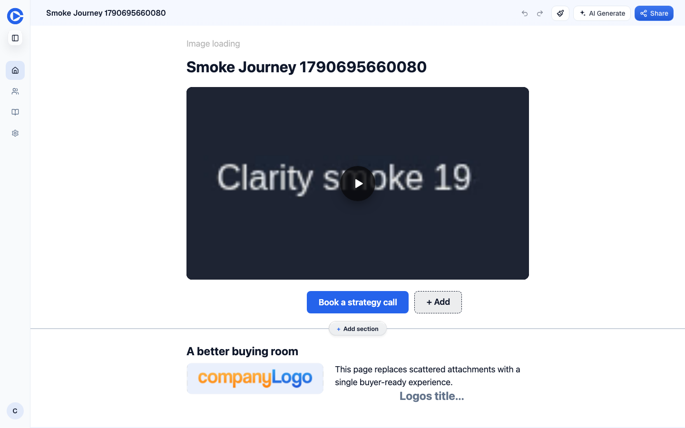
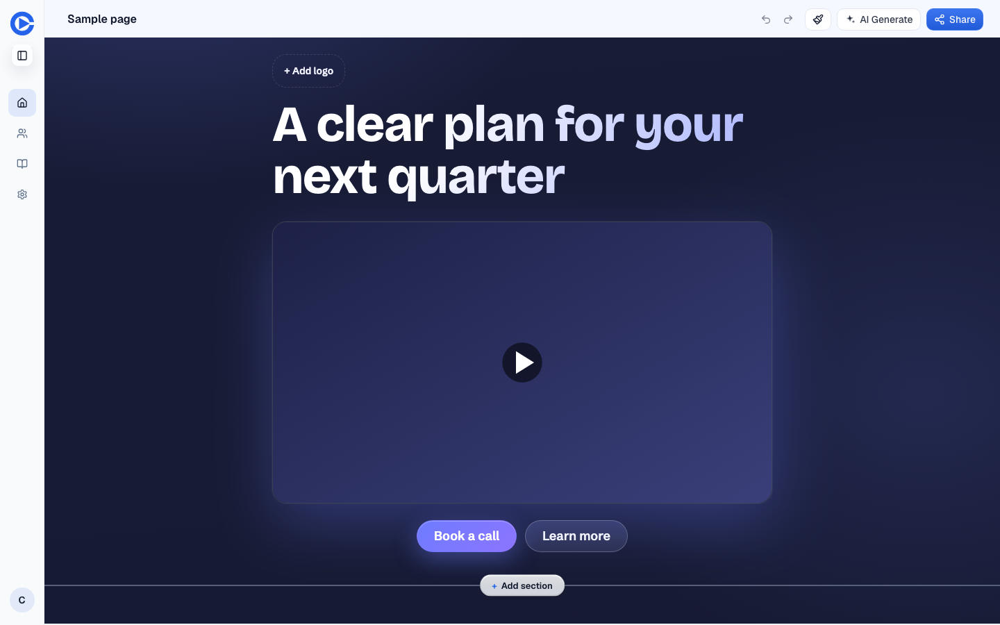
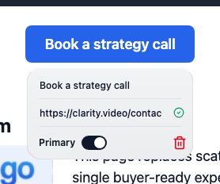
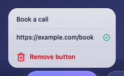
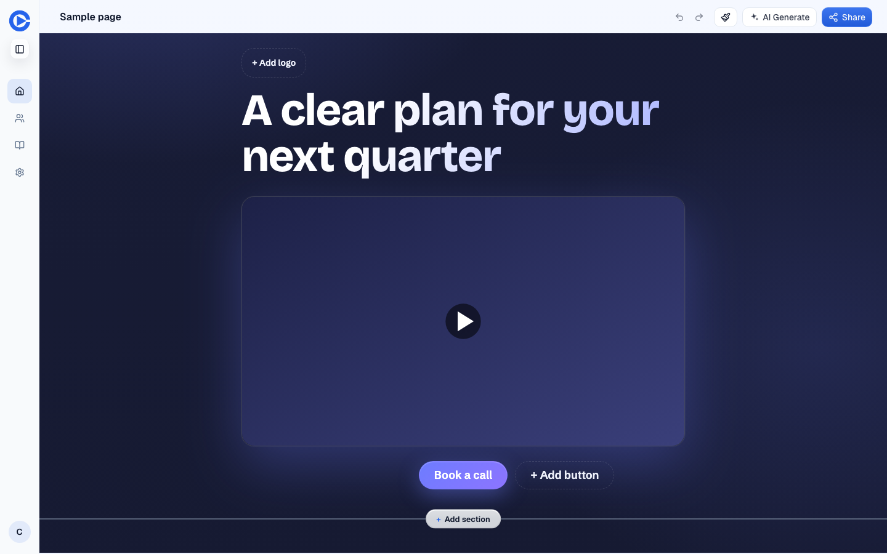

Hero buttons: two at most, no button types, no Primary switch
Editor canvas, hero block. Public page rendering stays as it is.
Cap the hero at two buttons. The editor shows them as one list where each button has a label and a link, the first is primary, and "+ Add button" appears only while there is one. Delete the Sign / Payment / Custom seeds and the Primary switch. Keep the four stored slots and the four tracking ids exactly as they are, so no page, no publication and no stats row changes.
The problem
The hero stores four button slots (primary, sign, payment, custom). The rep never picks a type: "+ Add" fills the next slot in a fixed order and seeds its label "Sign", then "Payment", then "Custom", with no menu and no confirm (the audit's screenshot run added three by accident). Each button's hover card carries a Primary switch. The slot types are nothing but a seeded label and a tracking id; a Payment button is a link like any other. In production, 69% of recent customer heroes render no button, 24% one, 5% two, and 2% three or four. The Primary switch has been used on 4 pages ever, all 4 choosing "secondary".
The third and fourth buttons also get fewer clicks per view than one or two (6 per 100 views on the six pages that have them, against 9 to 18).
What it would look like
Before, "+ Add" keeps adding up to four and the hover card holds label, link, a Primary switch and a trash icon. After, the row holds at most two, "+ Add button" seeds "Learn more", and the card holds label, link and Remove.









What the data says
Production, read-only, 2026-10-13. Customer accounts only (internal, test and admin accounts excluded). "Rendered" means the public renderer's own rule (resolveHeroCtaRow), which also requires a slot to be enabled; the audit's earlier "label or link filled" rule overcounts because legacy pages carry labels on disabled slots.
Buttons rendered per hero
| Buttons | Customer pages, last 90 days | Customer pages, all time (live) |
|---|---|---|
| 0 | 195 (69%) | 3,204 (59%) |
| 1 | 67 (24%) | 1,510 (28%) |
| 2 | 13 (5%) | 508 (9%) |
| 3 | 5 (2%) | 195 (4%) |
| 4 | 1 | 6 |
Which slots render, last 90 days
| Slot | Heroes |
|---|---|
| primaryCta | 81 |
| signCta | 16 |
| customCta | 9 |
| paymentCta | 6 |
All time: primary 1,755, custom 803, payment 436, sign 141. The explicit style field is set on 4 pages ever, every value "secondary".
Clicks by tracking id, customer pages
| cta_id | Clicks all time | Pages | Clicks last 90 days | Pages |
|---|---|---|---|---|
| hero-primary | 796 | 76 | 605 | 46 |
| hero-custom | 209 | 17 | 122 | 9 |
| hero-sign | 85 | 15 | 42 | 9 |
| hero-payment | 21 | 5 | 15 | 3 |
Every recorded click on any prospect page is a hero button. Pricing and document buttons record nothing (U03 fixes that tonight).
Clicks per 100 views by number of rendered buttons, customer pages, last 90 days
| Buttons | Pages with views | Views | Clicks | Clicks per 100 views |
|---|---|---|---|---|
| 0 | 87 | 1,090 | 2 | 0.2 |
| 1 | 171 | 5,964 | 619 | 10.4 |
| 2 | 42 | 680 | 122 | 17.9 |
| 3 or more | 5 | 654 | 38 | 5.8 |
The button count is the page's current publication, so a page edited after its views is counted at today's count. The two-button rate rests on 42 pages, and the three-plus rate on 5. Read it as "a second button does not hurt, a third does not help", not as a measured lift.
Options
The editor maps the four stored slots to a list of enabled buttons. "+ Add button" enables the next empty slot with the label "Learn more". The renderer, the stored documents and the tracking ids do not change. Pages that already render three or four buttons keep them until the rep removes one; the editor shows them but will not add a fifth. Smallest diff, no migration, no stats remap.
Cleaner model, but it touches 5,431 live documents plus publications, needs a remap of hero-sign / hero-payment / hero-custom in stats, and buys nothing a rep can see. Do it later if the hero block gets rebuilt for another reason.
Removes one control and leaves "+ Add" seeding Sign, Payment and Custom up to four. Half the problem.
Questions for William
Recommended: Yes. 6 recent customer pages and 201 all-time live pages render three or more. Leave them rendering; the editor simply offers no further add.
Recommended: Plain links. Nothing in the renderer or the workers treats them differently beyond the tracking id, which stays.
Recommended: Yes. U06 already changes the fallback and seeds to these tonight; this item only removes the type menu around them.
PRs once decided
editor/src/components/editor/CtaRowEditor.tsx: list of enabled buttons, add fills the next free slot, remove disables it, delete the type seeds and CtaPrimarySwitch. Storage and renderer untouched. Evidence: editor row with 0, 1, 2 buttons, and a legacy page with 3 showing all three.
Page stats rows read "hero-sign" today. Show the button's label and "Button 1 / Button 2" when the label is blank. Depends on U03 and U07 landing first.